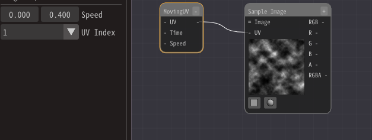
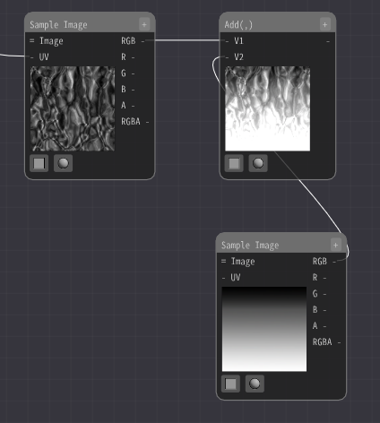
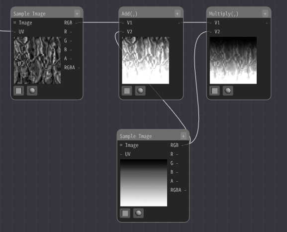
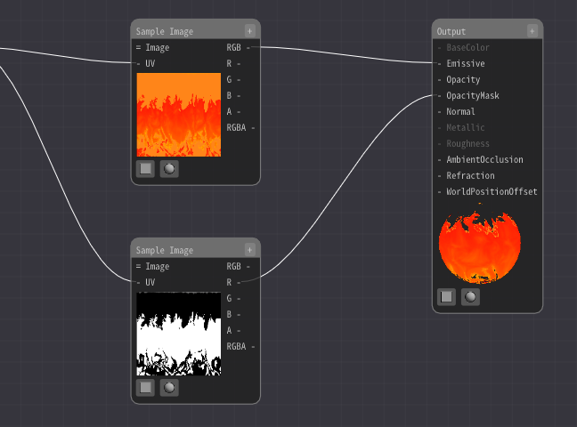
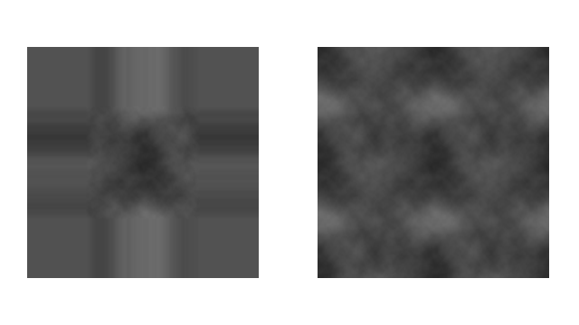
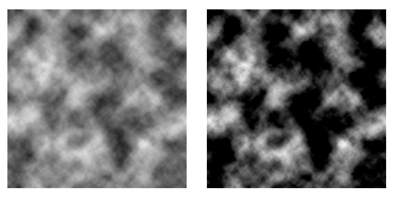

02. 用材质表现卡通风格火焰。¶
制作¶
本章使用了各种图像和3D模型。你可以用你熟悉的软件制作类似的材质素材。
准备这些数据是很耗时的，所以我们准备了预制的材质素材。我也会稍微解释一下如何制作它们，但如果你不能或不想制作这些素材，可以使用我们准备好的。
创建这些数据是很耗时的，所以我们在这里准备了我们已经创建的材料数据。我们也会稍微解释一下如何创建它们，但是如果你无法创建材料或者觉得创建材料很繁琐，请使用这些材料。
模型和材质都已经设置好了。关于创建新材质和基本用法，请参见前一章。
首先，显示一张带有滚动的云层图案的灰色图像。
添加一个采样图像节点，图像选择Textures/Noise1.png。它的作用仅仅是显示图片。
添加一个移动UV节点来移动它。然后把它连接到采样图像节点。移动UV节点的速度输入(0.0, 0.4)。
现在图像将垂直移动。
然而，现在的云层图案太粗糙了，需要加以完善。将一个乘节点连接到采样图像节点的UV上。乘法的输入是移动UV节点的输出和(4.0, 1.0)。
原本图像水平方向UV坐标中的1将变成4。这意味着之前水平方向显示一张图像的范围内将会显示4张图像。
就像现在这样，它看起来根本就不像一个火焰。添加扭曲来使运动复杂化。
添加一个采样图像节点，选择扭曲贴图Textures/Normal1.png。
添加一个遮罩元素节点并选择RG。然后添加一个减节点并减去0.5。扭曲贴图中的红色和绿色表示上下和左右方向的扭曲，0.5表示0。因此，减去中间值0.5。
此外，乘以0.5来调整扭曲的强度。
然后把扭曲值加到UV上。
这样，图像就被扭曲了。它可能看起来有点像火焰。
火焰在顶部较暗，在底部较亮。为了实现这一点，可以加上或乘一个渐变图像。
添加一个采样图像节点并选择图像Textures/Gradation1.png。
然后用加法节点把它和之前的扭曲图像加在一起。
现在图像的底部会发光。
接下来，为了使图像的顶部变暗，用乘节点将之前的图像和新增的图像相乘。
这将使图像的顶部部分变暗。现在它有点像火焰了。
最后，上色。
使用一个彩色的渐变图像来着色。添加一个采样图像节点并选择图像Textures/Gradation2.png。

然后，遮罩元素节点从流动的图像中提取RG。把它输入到UV中。（译注：图中未使用遮罩元素节点，而是直接将乘法的输出连接到UV中）
然后颜色将随着渐变图像改变。
渐变图像被参照的位置随着输入的流动的图像的颜色而改变。这导致颜色随着渐变而变化。
黑色的值为0，所以会被替换成Gradient2.png顶部的颜色，而白色的值为1，所以会被替换成Gradient2.png底部的颜色。这样可以将一张灰色的图像转换为一张彩色的图像。

流动的图像RG值被转换为Gradient2.png的横纵坐标，在这个例子中，R值和G值是同步变化的，也就是说，实际上黑色采样的是Gradient2.png的左上方(0,0)，白色采样的是Gradient2.png的右下方(1,1)。由于Gradient2.png在水平方向没有变化，所以即便输入的R值变化了，输出的颜色也不会受到影响。
如果Gradient2.png在水平方向上也有变化，而你只需要竖直方向的变化，你需要固定输入的R值，而只改变G值。
同样地，为了改变透明度。添加一个采样图像节点并选择图像Textures/Gradation3.png。以同样方式连接流动的图像。白色区域将是不透明的，黑色区域是透明的。
将Gradation2的采样图像节点连接到输出节点的Emmisive（自发光）。
将Gradation3的采样图像节点连接到输出节点的OpacityMask（不透明度遮罩）。
火焰图案就显示出来了。
但是，细节部分的颜色并不正确。

原因是采样图像节点在引用图像时选择了Repeat（重复）。
图像可以设置为Clamp（钳制）或Repeat，这是决定如何处理边缘的参数。
当UV坐标超过1.0时，你可以设置超出边缘的区域是应该填充边缘的颜色，还是应该重复图像。如果设置为Repeat，它将从另一侧开始重复采样。
下图左边是Clamp，右边是Repeat。
颜色值可能超过1.0（255）或低于0，导致颜色被错误地引用到另一边。
它可能由于计算中的错误而超过1.0，就本案例而言，是因为图像被相加。
因此，将渐变图像的采样图像节点的Repeat改为Clamp。
这样就完成了。
最后，你可以通过下面的链接下载本章中制作的特效。
如何制作云层图像¶
这次我使用PhotoShop。新建一张分辨率为1024的图像，在PhotoShop中选择云彩（译注：滤镜-渲染-云彩）。提高对比度使黑白对比更显著。
然后将分辨率降低到512并保存。
如何制作扭曲贴图¶
这次我使用PhotoShop。新建一张分辨率为1024的图像，在PhotoShop中选择云彩。
然后，我们新建一张3072x3071的图像。从之前的步骤复制九次云层的图案。这是为了方便地制作循环图案。然后，生成法线（译注：滤镜-3D-生成法线）。
最后，剪切出中间的1024x1024的图案，将分辨率降低到512并保存。
如何制作渐变图像¶
这是通过PhotoShop的梯度制作的。由于是卡通风格，颜色做成了突然变化的样子。
总结¶
本章中，我们制作了火焰。为了表述清楚，用了多张分开的图像，但是在实践中，这些图像可能被合并，以使之更轻量化。
However, this will only result in a fixed continuous flow of flame. In the next chapter, we will be able to apply this to a variety of things.
然而，制作出的火焰只是在固定地持续流动。在下一章，我们可以将其应用于各种东西。（译注：看不懂）